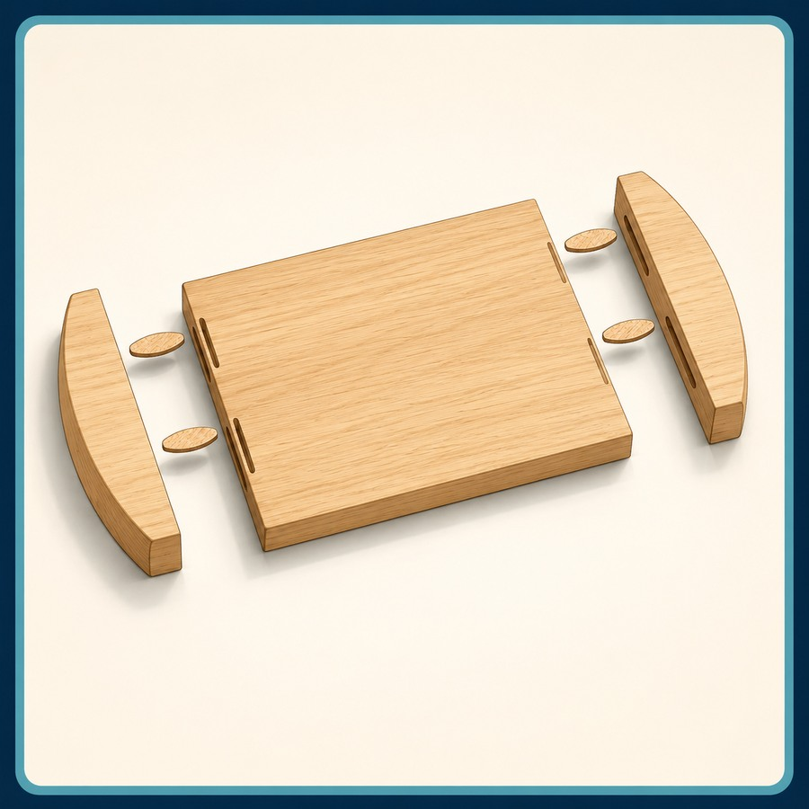
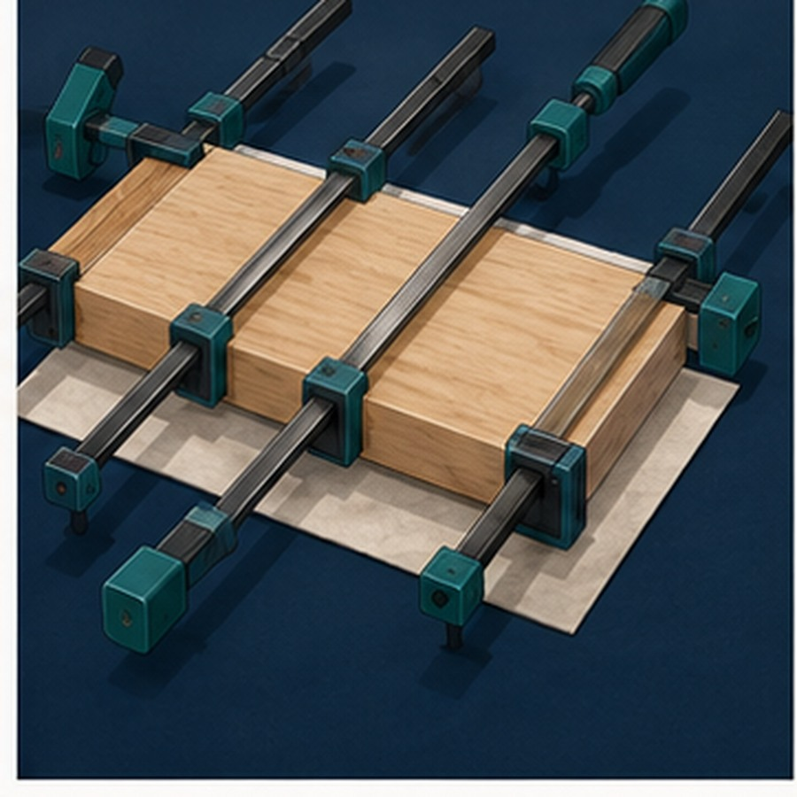
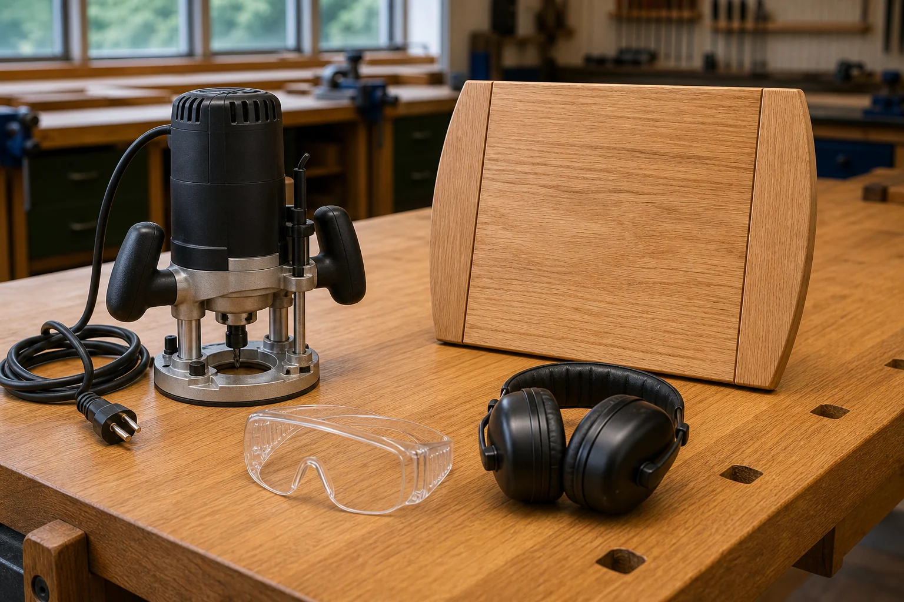

Your work
Student details
Your entries save automatically in this browser. Use Print / Save PDF before leaving.
Two-week roadmap
What you will learn and produce
- AssembleDry fit the complete project without adhesive.
- DiagnoseFind the cause of gaps or movement.
- PlanSequence adhesive and clamping actions.
- ControlProtect alignment while pressure is applied.
- PrepareCheck safe conditions before routed profiles.
Learning intentions
Use dry assembly as a quality gate and explain a safe, orderly glue-up and profile-preparation plan.
Success criteria
- I identify fit and orientation before adhesive.
- I diagnose rather than force an assembly.
- I stop when routed-profile conditions change.
Theory 1
Dry assembly before glue-up

A dry assembly is a trial fit completed before any adhesive is applied. It allows each breadboard component to be arranged in its planned position so the overall fit can be checked carefully. Begin by laying out the parts in the same orientation shown on the project plan. Reference faces, edges and matching joint marks should remain consistent so pieces are not accidentally reversed or turned end for end.
The project plan is the main reference during this process. Compare the arrangement with the drawing rather than relying on memory or assuming that similar-looking parts are interchangeable. Check the direction of each component, the location of matching joints and the way the pieces are intended to meet. A correct dry assembly should reflect the planned form before any permanent joining begins.
Fit the joints together carefully and observe how they meet. Joint lines should come together as intended without obvious gaps or parts sitting out of position. Do not force a component into place simply because it appears close. Resistance may indicate that a piece is incorrectly oriented, a joint is not aligned or a small area requires further checking.
Check the assembly from above, from each side and along its length. Look for gaps between components, edges that do not align, or parts that appear twisted. Place the assembly on a suitable flat support and observe whether it sits evenly. A component that rocks, lifts or pulls another part out of line may indicate an issue that needs to be understood before glue-up.
Small corrections should be made only after the cause of the problem has been identified. Recheck the project plan, joint marks, reference faces and component orientation before altering any timber. A simple repositioning may solve the issue. Removing material without understanding the cause can make a joint loose or create a larger gap.
After any correction, repeat the dry assembly and inspect the whole project again. One change can affect the fit of another joint, so the assembly must be checked as a complete group rather than as separate pairs of parts.
If a gap, twist or alignment problem cannot be clearly explained, stop and seek teacher direction. Do not guess or continue towards glue-up hoping the problem will disappear. Adhesive makes later correction much more difficult, so the assembly should be understood and approved before the joining process begins.
Dry-assembly check
- Components match the orientation shown on the plan.
- Reference faces, edges and joint marks are consistent.
- Joints meet without unexplained gaps or force.
- The assembly shows no obvious twist or misalignment.
- Small corrections have been checked by reassembling.
- Unexplained problems are referred to the teacher.
Theory 2
A careful glue-up and clamping plan

A successful glue-up begins before any adhesive is applied. All components should be prepared, checked and arranged in their planned orientation. The workspace should be clear, clean and large enough to support the project safely. Clamps, protective pads and any other teacher-approved items should be ready and positioned so the process can continue without unnecessary delays.
Follow the teacher’s instructions for the approved glue-up procedure. The sequence may depend on the way the breadboard components fit together, so do not change the order without checking first. A sensible sequence reduces confusion and makes it easier to keep joints aligned as the assembly comes together.
Before starting, complete one final check of the dry assembly. Confirm that matching parts are correctly oriented and that joints meet as intended. Once adhesive has been introduced, there is less time to stop and solve an unexpected problem. Preparation should remove guesswork and allow the work to proceed calmly.
Keep joining surfaces and surrounding areas as clean as possible. Dust, chips or other debris can prevent parts from meeting properly or leave unwanted marks on the timber. Handle components carefully and avoid placing them on dirty or rough surfaces. Clean hands and a tidy bench also reduce the chance of staining or damaging the project.
As clamps are fitted, check that the components remain aligned. Observe the joint lines, reference edges and overall position of the assembly. Clamping should not pull a correctly arranged project out of shape. If a part begins to move, twist or sit unevenly, stop and follow teacher direction before continuing.
Avoid rushing simply because the glue-up has begun. Fast, uncontrolled work often leads to reversed components, missed checks or damage from poorly positioned clamps. Work steadily through the planned sequence and communicate clearly if assistance is needed.
Protect the timber from unnecessary marks by using the approved supports and protective materials. Clamps and bench surfaces should not dent, scratch or stain the work. Do not place loose items on the project or move it around once the assembly has been positioned.
When the glue-up is complete, leave the project undisturbed for the period directed by the teacher. Do not test, lift, adjust or remove clamps early. The assembly should remain supported and protected until the teacher confirms that it is ready for the next stage.
Glue-up check
- Components and workspace are prepared before starting.
- Teacher instructions and the planned sequence are followed.
- Surfaces remain clean and free from debris.
- Alignment is checked as clamps are fitted.
- The project is protected from marks and damage.
- The assembly is left undisturbed as directed.
Theory 3
Safe preparation for routed profiles

Safe preparation begins by confirming the intended routed profile before any work starts. Use the project plan and the teacher’s instructions to identify where the profile belongs and what the finished edge should look like. Do not rely on memory or assume that every edge receives the same treatment. The component must be correctly oriented, and the planned profile must be clearly understood before proceeding.
Inspect the timber component carefully. Check that it is the correct piece and that its faces, edges and orientation match the plan. Look for damage, loose material, unexpected defects or markings that may affect the planned process. If anything appears different from the approved component or plan, stop and show the teacher before continuing.
The workspace must be clear and organised. Remove offcuts, tools, dust and unrelated materials that could interfere with safe movement or support. The component must be held securely using the support method demonstrated by the teacher. It should not rock, slide or shift while being prepared or worked. Secure support allows attention to remain on the planned task rather than on controlling an unstable piece.
Wear the personal protective equipment directed by the teacher. Check that it fits correctly and does not interfere with safe movement or clear vision. Loose clothing, hair and other items must be managed according to workshop instructions before approaching the work area. Protective equipment supports safe practice but does not replace careful preparation and focused behaviour.
Follow the teacher-demonstrated process without changing the settings, sequence or technique. A method that appears faster or easier may introduce risks or damage the component. Do not copy another student’s approach if it differs from the approved demonstration. Work only when authorised and remain within the teacher’s instructions throughout the process.
Stay focused on the component and the immediate work area. Avoid conversations, distractions and unnecessary movement while preparing for or completing the routed profile. Rushing can lead to missed checks, poor support or incorrect orientation. Calm, deliberate preparation improves both safety and accuracy.
Stop immediately if the planned profile becomes unclear, the component moves, protective equipment needs adjustment, the workspace changes or any condition no longer matches the demonstrated setup. Do not continue and hope the problem resolves itself. Move away safely and seek teacher direction before restarting.
Profile-preparation check
- The planned profile is confirmed from the plan and teacher instructions.
- The correct component and orientation have been checked.
- The timber has been inspected for unexpected issues.
- The workspace is clear and the component is securely supported.
- Directed personal protective equipment is worn correctly.
- The demonstrated process will be followed without changes.
- Work stops if instructions are unclear or conditions change.
Guided practice
Weeks 5-6 knowledge checks
Use specific feedback to improve each answer.
Apply your learning
Scaffolded written responses
Explain the reason and consequence, not only the action.
Finish the two-week block
Save your evidence
Save the completed page as a PDF before changing devices or clearing browser data.
No data is sent from this page. Google Classroom upload remains outside this website.